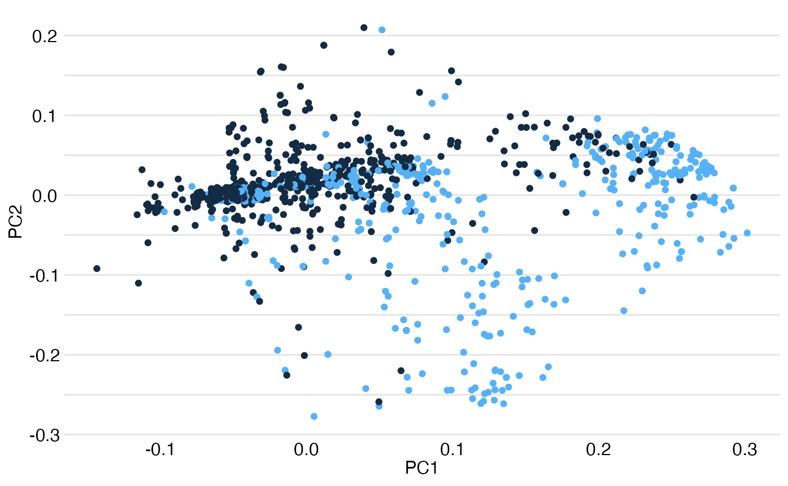
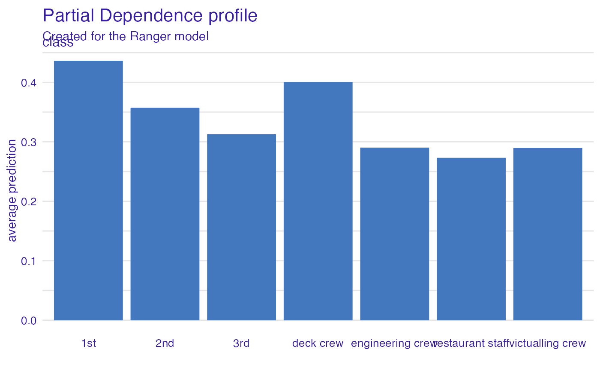
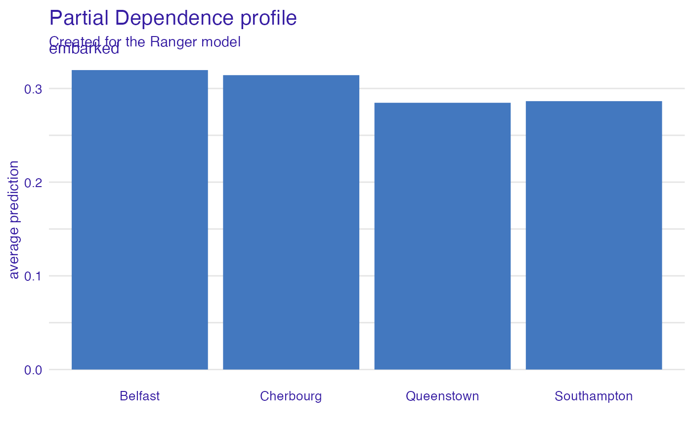

Survival on the RMS Titanic with arborist
Przemyslaw Biecek
2022-08-31
Source:vignettes/vignette_titanic.Rmd
vignette_titanic.RmdData for Titanic survival
Let’s see an example for DALEX package for
classification models for the survival problem for Titanic dataset. Here
we are using a dataset titanic available in the
DALEX package. Note that this data was copied from the
stablelearner package.
#> gender age class embarked fare sibsp parch survived
#> 1 male 42 3rd Southampton 7.11 0 0 0
#> 2 male 13 3rd Southampton 20.05 0 2 0
#> 3 male 16 3rd Southampton 20.05 1 1 0
#> 4 female 39 3rd Southampton 20.05 1 1 1
#> 5 female 16 3rd Southampton 7.13 0 0 1
#> 6 male 25 3rd Southampton 7.13 0 0 1Embeddings
Embeddings have gained enormous popularity in modelling with deep network models. It turns out that they can also be calculated for tree-based models!
Two types of embeddings are implemented in the arborist
package and we will look at them below.
Binary embeddings
library("arborist")
model_fr <- train(titanic_imputed, "survived", engine = "randomForest", ntree = 25)
embeddings_binary <- arborist::embed(titanic_imputed, model_fr, type = "binary")And let’s see PCA transformation for these embeddings.
str(embeddings_binary)#> num [1:2207, 1:25] 231 231 239 140 129 ...
library("ggplot2")
pca_embed <- prcomp(embeddings_binary)
df <- as.data.frame(pca_embed$x)
df$val <- titanic_imputed$survived
ggplot(df, aes(PC1, PC2, color = val)) +
geom_point() +
DALEX::theme_ema()Shap embeddings
Currently we are using treeshap package and it does not
handle correctly categorical variables. So we use only numerical
ones.
small_titanic <- titanic_imputed[,c(2,5,6,7,8)]
model_fr <- train(small_titanic, "survived", engine = "randomForest", type = "regression")
embeddings_shap <- arborist::embed(small_titanic, model_fr, type = "shap")And let’s see PCA transformation for these embeddings.
str(embeddings_shap$shaps)#> 'data.frame': 2207 obs. of 5 variables:
#> $ age : num -0.02756 0.08143 0.00439 -0.06779 0.02856 ...
#> $ fare : num -0.05347 -0.00372 -0.03978 -0.03038 -0.02904 ...
#> $ sibsp : num -0.00155 0.0478 0.01207 0.00418 0.0044 ...
#> $ parch : num -0.00896 0.09298 0.13238 0.10452 -0.01659 ...
#> $ survived: num 0 0 0 0 0 0 0 0 0 0 ...
pca_embed <- prcomp(embeddings_shap$shaps)
df <- as.data.frame(pca_embed$x)
df$val <- titanic_imputed$survived
ggplot(df, aes(PC1, PC2, color = val)) +
geom_point() +
DALEX::theme_ema()
Simple model with arborist
Let’s use the arborist to train the model.
# prepare model
library("arborist")
model_fr <- train(titanic_imputed, "survived")#> -> type set to classification
#> -> leaderboard
#> Random Forest Ranger
#> recall 0.6164384 0.5821918
#> precision 0.8653846 0.8673469
#> f1 0.72 0.6967213
#> accuracy 0.8412698 0.8321995
#> auc 0.796169 0.832482
model_fr#> Model label: Ranger
#> Model class: foresterRanger,forester,ranger
#> Data head :
#> gender age class embarked fare sibsp parch
#> 3 male 16 3rd Southampton 20.0500 1 1
#> 10 male 20 3rd Southampton 7.1806 0 0Leaderboard
model_fr$leaderboard#> Random Forest Ranger
#> recall 0.6164384 0.5821918
#> precision 0.8653846 0.8673469
#> f1 0.72 0.6967213
#> accuracy 0.8412698 0.8321995
#> auc 0.796169 0.832482Model performance
model_performance(model_fr)#> Measures for: classification
#> recall : 0.5821918
#> precision : 0.8673469
#> f1 : 0.6967213
#> accuracy : 0.8321995
#> auc : 0.832482
#>
#> Residuals:
#> 0% 10% 20% 30% 40% 50%
#> -0.88759087 -0.25769721 -0.22300895 -0.20804548 -0.18151999 -0.15415377
#> 60% 70% 80% 90% 100%
#> -0.10633068 0.05356576 0.30380823 0.64663740 0.93450860Variable importance plots
Use the variable_importance() explainer to present the
importance of particular features. Note that
type = "difference" normalizes dropouts, and now they all
start in 0.
vi_rf <- model_parts(model_fr)
head(vi_rf)#> variable mean_dropout_loss label
#> 1 _full_model_ 0.1675180 Ranger
#> 2 parch 0.1647550 Ranger
#> 3 embarked 0.1672313 Ranger
#> 4 sibsp 0.1720827 Ranger
#> 5 age 0.1806153 Ranger
#> 6 fare 0.1901602 Ranger
plot(vi_rf)
Variable effects
As we see the most important feature is Sex. Next three
important features are Pclass, Age and
Fare. Let’s see the link between model response and these
features.
Such univariate relation can be calculated with
variable_effect().
Age
Kids 5 years old and younger have a much higher survival probability.
vr_age <- model_profile(model_fr, variables = "age")
head(vr_age)#> $cp_profiles
#> Top profiles :
#> gender age class embarked fare sibsp parch _yhat_ _vname_
#> 1597 male 1.0 deck crew Southampton 0 0 0 0.5291734 age
#> 1597.1 male 4.0 deck crew Southampton 0 0 0 0.5290459 age
#> 1597.2 male 5.0 deck crew Southampton 0 0 0 0.5260703 age
#> 1597.3 male 7.2 deck crew Southampton 0 0 0 0.5099041 age
#> 1597.4 male 11.2 deck crew Southampton 0 0 0 0.4309323 age
#> 1597.5 male 14.0 deck crew Southampton 0 0 0 0.3957575 age
#> _ids_ _label_
#> 1597 1597 Ranger
#> 1597.1 1597 Ranger
#> 1597.2 1597 Ranger
#> 1597.3 1597 Ranger
#> 1597.4 1597 Ranger
#> 1597.5 1597 Ranger
#>
#>
#> Top observations:
#> gender age class embarked fare sibsp parch _yhat_
#> 1597 male 27 deck crew Southampton 0.0000 0 0 0.4262889
#> 11 male 30 3rd Southampton 7.0500 0 0 0.1476194
#> 1460 male 32 restaurant staff Southampton 0.0000 0 0 0.2013977
#> 1363 male 33 engineering crew Southampton 0.0000 0 0 0.2198843
#> 606 female 23 2nd Cherbourg 13.1510 0 0 0.7883280
#> 259 male 31 3rd Queenstown 7.1408 0 0 0.1300329
#> _label_ _ids_
#> 1597 Ranger 1
#> 11 Ranger 2
#> 1460 Ranger 3
#> 1363 Ranger 4
#> 606 Ranger 5
#> 259 Ranger 6
#>
#> $agr_profiles
#> Top profiles :
#> _vname_ _label_ _x_ _yhat_ _ids_
#> 1 age Ranger 1.0 0.5724960 0
#> 2 age Ranger 4.0 0.5682477 0
#> 3 age Ranger 5.0 0.5647407 0
#> 4 age Ranger 7.2 0.5486436 0
#> 5 age Ranger 11.2 0.4717194 0
#> 6 age Ranger 14.0 0.4406533 0
#>
#> $color
#> [1] "#4378bf"
plot(vr_age)
Passenger class
Passengers in the first-class have much higher survival probability.
vr_class <- model_profile(model_fr, variables = "class")
plot(vr_class)
Fare
Very cheap tickets are linked with lower chances.
vr_fare <- variable_profile(model_fr, variables = "fare")
plot(vr_fare)
Embarked
Passengers that embarked from C have the highest survival.
vr_embarked <- model_profile(model_fr, variables = "embarked")
plot(vr_embarked)
Instance level explanations
Let’s see break-down explanation for model predictions for 8 years old male from 1st class that embarked from port C.
new_passanger <- data.frame(
class = factor("1st", levels = c("1st", "2nd", "3rd", "deck crew", "engineering crew", "restaurant staff", "victualling crew")),
gender = factor("male", levels = c("female", "male")),
age = 8,
sibsp = 0,
parch = 0,
fare = 72,
embarked = factor("Southampton", levels = c("Belfast", "Cherbourg", "Queenstown", "Southampton"))
)
sp_rf <- predict_parts(model_fr, new_passanger)
plot(sp_rf)
It looks like the most important feature for this passenger is
age and sex. After all his odds for survival
are higher than for the average passenger. Mainly because of the young
age and despite being a male.
Session info
#> R version 4.1.0 (2021-05-18)
#> Platform: x86_64-apple-darwin17.0 (64-bit)
#> Running under: macOS Big Sur 10.16
#>
#> Matrix products: default
#> BLAS: /Library/Frameworks/R.framework/Versions/4.1/Resources/lib/libRblas.dylib
#> LAPACK: /Library/Frameworks/R.framework/Versions/4.1/Resources/lib/libRlapack.dylib
#>
#> locale:
#> [1] en_US.UTF-8/en_US.UTF-8/en_US.UTF-8/C/en_US.UTF-8/en_US.UTF-8
#>
#> attached base packages:
#> [1] stats graphics grDevices utils datasets methods base
#>
#> other attached packages:
#> [1] ggplot2_3.3.6.9000 arborist_0.2.0 DALEX_2.4.2
#>
#> loaded via a namespace (and not attached):
#> [1] tidyselect_1.1.2 xfun_0.32 bslib_0.3.1
#> [4] purrr_0.3.4 lattice_0.20-44 colorspace_2.0-3
#> [7] vctrs_0.4.1 generics_0.1.2 htmltools_0.5.3
#> [10] yaml_2.3.5 utf8_1.2.2 rlang_1.0.4
#> [13] pkgdown_2.0.5 jquerylib_0.1.4 pillar_1.8.1
#> [16] withr_2.5.0 glue_1.6.2 DBI_1.1.1
#> [19] lifecycle_1.0.1 stringr_1.4.1 munsell_0.5.0
#> [22] gtable_0.3.0 ragg_1.2.2 memoise_2.0.0
#> [25] evaluate_0.16 labeling_0.4.2 knitr_1.40
#> [28] fastmap_1.1.0 fansi_1.0.3 highr_0.9
#> [31] iBreakDown_2.0.1 Rcpp_1.0.9 scales_1.2.1
#> [34] cachem_1.0.5 desc_1.3.0 jsonlite_1.8.0
#> [37] ingredients_2.2.0 farver_2.1.1 systemfonts_1.0.4
#> [40] fs_1.5.2 textshaping_0.3.6 ranger_0.14.1
#> [43] digest_0.6.29 stringi_1.7.8 dplyr_1.0.9
#> [46] grid_4.1.0 rprojroot_2.0.2 cli_3.3.0
#> [49] tools_4.1.0 treeshap_0.1.1 magrittr_2.0.3
#> [52] sass_0.4.0 tibble_3.1.8 randomForest_4.7-1.1
#> [55] crayon_1.5.1 pkgconfig_2.0.3 Matrix_1.3-3
#> [58] data.table_1.14.2 assertthat_0.2.1 rmarkdown_2.11
#> [61] rstudioapi_0.14 R6_2.5.1 compiler_4.1.0